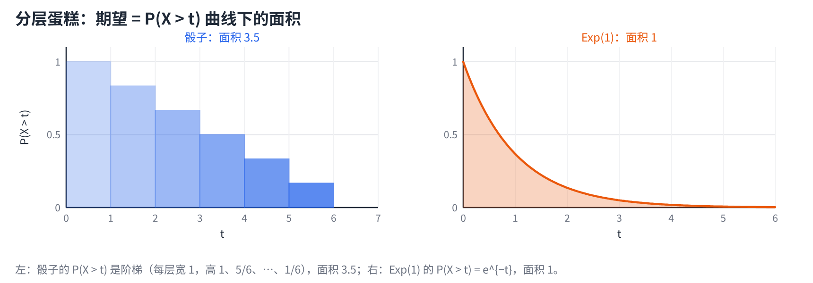
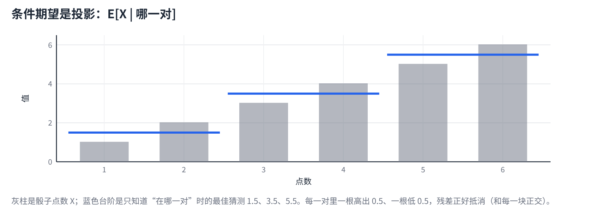
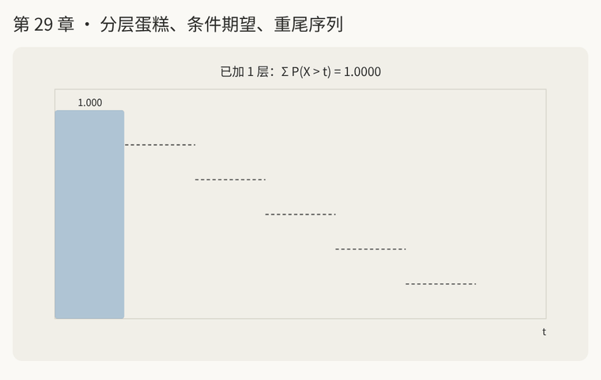

第 29 章 · 测度论概率入门：σ-代数、Lebesgue 积分、Radon-Nikodym 导数、条件期望与收敛方式
本地运行
git clone https://github.com/wikieden/math-and-eval-stats
cd math-and-eval-stats/code/notebooks
pip install jupyterlab torch numpy
jupyter lab ch29_measure_probability.ipynb也可以下载后直接用 VS Code 打开 .ipynb 运行。需要 GPU 的章节在 Colab 里选「代码执行程序 → 更改运行时类型 → GPU」。
本章回答：论文里"概率空间 (Ω, F, P)"到底在说什么？为什么要有 σ-代数？期望为什么可以写成 ∫P(X > t)dt？"密度"的严格含义是什么，重要性采样的权重为什么叫 Radon-Nikodym 导数？条件期望为什么是投影？依概率收敛、几乎处处收敛、期望收敛有什么区别？
讲解日期：2026-11-25 · 上一章：第 28 章 Flow matching 推导 · 下一章：第 30 章 泛函分析入门
对应原文：Durrett《Probability: Theory and Examples》5emath-and-eval-stats/materials/text/books/durrett-probability-theory-examples-5e.txt（§1.1 概率空间 L251、§1.4 积分 L1038、§1.6 期望 L1584、§2.2 弱大数定律 L2854、§3.4 中心极限定理 L7252、§4.1 条件期望 L10295、附录 A.4 Radon-Nikodym 定理 L10355–L10361）
本章缩写：σ-代数（sigma-algebra）= 能谈论概率的事件的集合；(Ω, F, P) = 样本空间、事件 σ-代数、概率测度；a.s. = almost surely（几乎处处 / 几乎必然：除了概率 0 的情况）；dP/dQ = Radon-Nikodym 导数（Radon、Nikodym 是两位数学家）；LLN = Law of Large Numbers（大数定律）；CLT = Central Limit Theorem（中心极限定理）；1_B = 事件 B 的指示函数。全部缩写见 附录 · 缩写与术语表
讲解
第一步：σ-代数：能问概率的事件的集合（2026-11-25）
类比：一份问卷能问哪些问题。 问卷设计好以后，"答案落在哪一格"能问，"更细的情况"问不了。σ-代数就是这份问卷：它规定哪些事件是"可以谈概率的"。
规则（Durrett §1.1，L251）：包含全集；对补集封闭；对可数并封闭。
例子：掷一颗骰子，但你只知道"点数在哪一对里"（{1, 2}、{3, 4}、{5, 6}）。这个信息层次生成的 σ-代数有 2³ = 8 个事件（这三块的所有并），{1, 2} 在里面，{1} 不在：这层信息分不出 1 和 2。完整的骰子是 2⁶ = 64 个事件。
为什么要这么麻烦：在 [0, 1] 这种连续空间上，不能给"所有子集"都定义满足可加性的长度（存在不可测集）；只能挑一个够用的事件集合（Borel σ-代数）。机器学习里 σ-代数还有一个实际用途：表示"信息"。"给定到第 t 步为止的观测"在严格写法里就是一串越来越大的 σ-代数 F_t（滤波、鞅、第 32 章的随机积分都用它）。
一句话：σ-代数是"能问概率的事件清单"，也是"手上有多少信息"的数学表示。
第二步：Lebesgue 积分与期望：按值域切片（2026-11-25）
类比：数钱。 Riemann 积分是按顺序一张张数（按定义域切）；Lebesgue 积分是先把同面额的摞在一起，再数每摞有几张（按值域切）。
非负随机变量的期望（Durrett §1.4、§1.6，L1038、L1584）可以写成"分层蛋糕"：
例子：
| 随机变量 | Σ / ∫ P(X > t) | 直接算 E[X] |
|---|---|---|
| 骰子 | 1 + 5/6 + 4/6 + 3/6 + 2/6 + 1/6 = 3.5 | 3.5 |
| Exp(1) | ∫ e^{−t} dt = 1.0000 | 1 |

图 29-1 · 左：骰子的 P(X > t) 是阶梯，每层面积依次是 1、5/6、…、1/6，加起来 3.5；右：Exp(1) 的 P(X > t) = e^{−t}，面积 1好处：离散、连续、混合分布用同一个定义；单调收敛、控制收敛这些"极限和积分能不能交换"的定理在这个框架下干净地成立（训练里对 loss 求期望再求导、交换次序，靠的就是它）。
一句话：Lebesgue 积分按值域切片，期望 = ∫P(X > t)dt，离散、连续、混合分布统一处理。
第三步：密度 = Radon-Nikodym 导数（2026-11-25）
类比：汇率。 同一笔钱用两种货币计价，"一单位 Q 值多少 P"就是 dP/dQ。
Radon-Nikodym 定理（Durrett 附录 A.4，L10355–L10361）：若 Q(A) = 0 ⇒ P(A) = 0（P 对 Q 绝对连续），则存在函数 f = dP/dQ ≥ 0，使 \(P(A) = \int_Af\,dQ\)。
- 我们平时说的"密度"是对 Lebesgue 测度（长度）的 RN 导数；
- 重要性采样的权重（第 16 章）\(w = p/q\) 就是 dP/dQ：\(\mathbb E_P[g] = \mathbb E_Q[g\cdot dP/dQ]\)；
- PPO 的比率 π_new/π_old 也是。
例子（P = N(1, 1)、Q = N(0, 1)：dP/dQ = e^{x − 1/2}）：用 Q 的 20 万个样本，E_Q[dP/dQ] ≈ 1.0011（理论 1），E_Q[X·dP/dQ] ≈ 1.0036（= E_P[X] = 1）。
什么时候不存在：Q(A) = 0 而 P(A) > 0。比如 P 在 0 点有一个点质量，Q 是连续分布：P 对 Lebesgue 测度没有密度。这也是为什么两个支撑不重叠的分布之间 KL = ∞（第 33 章第四步）。
一句话：密度就是 RN 导数 dP/dQ，"换测度"的汇率；重要性权重、PPO 比率、似然比都是它。
第四步：条件期望：在信息允许的范围里做最好的猜测（2026-11-25）
类比：只知道"点数在哪一对"，让你猜点数。 最好的猜法是猜那一对的平均。
严格定义（Durrett §4.1，L10295）：E[X | G] 是 G-可测的随机变量 Y，满足对每个 B ∈ G，\(\mathbb E[X\cdot1_B] = \mathbb E[Y\cdot1_B]\)。几何上（X 有二阶矩时）它是 X 在"G-可测函数"这个子空间上的正交投影：均方误差最小。
例子（骰子，G = 第一步那个"哪一对"的 σ-代数）：
| 点数 | 1 | 2 | 3 | 4 | 5 | 6 |
|---|---|---|---|---|---|---|
| E[X | G] | 1.5 | 1.5 | 3.5 | 3.5 | 5.5 | 5.5 |
E[E[X | G]] = 3.5 = E[X]（全期望公式）；残差 X − E[X | G] 和三个块的指示函数的内积都是 0（正交）。

图 29-2 · 灰柱是 X（1 到 6），蓝色台阶是 E[X | 哪一对]；每一块里灰柱高出和低于台阶的部分正好抵消在哪用：第 28 章"条件目标的最优解是条件期望"、第 24 章的基线、Tweedie 公式（第 27 章），全都是这个投影性质。
一句话：条件期望是给定信息下的均方最优猜测，几何上是投影：残差和所有可用信息正交。
第五步：收敛方式：依概率收敛不等于期望收敛（2026-11-25）
| 方式 | 含义 |
|---|---|
| 几乎处处（a.s.） | 除概率 0 的情况外，每条样本路径都收敛 |
| 依概率 | 对任意 ε，P(|X_n − X| > ε) → 0 |
| L¹（期望） | E|X_n − X| → 0 |
| 依分布 | 分布函数收敛（CLT 说的是这个） |
a.s. ⇒ 依概率 ⇒ 依分布；L¹ ⇒ 依概率；反过来一般不成立。
反例：\(X_n = n\cdot1\{U < 1/n\}\)（U 均匀）：
| n | P(X_n ≠ 0) | E[X_n] |
|---|---|---|
| 10 | 0.1 | 1 |
| 1000 | 0.001 | 1 |
| 100000 | 0.00001 | 1 |
X_n → 0 依概率（甚至 a.s.），但期望一直是 1：极少发生、但一发生就极大的事件，把期望撑住了。评测里"偶尔一次灾难性失败"、RL 里重尾的重要性权重，就是这种情况。
LLN 和 CLT（Durrett §2.2 L2854、§3.4 L7252）：骰子平均
| n | P(|均值 − 3.5| > 0.1) | √n(均值 − 3.5)/σ 的标准差 |
|---|---|---|
| 10 | 0.9246 | 1.0055 |
| 100 | 0.5760 | 0.9997 |
| 1000 | 0.0669 | 1.0073 |
大数定律说偏差的概率 → 0；中心极限定理说偏差按 1/√n 缩、形状趋于正态。第 1 章的置信区间就建立在 CLT 上。
一句话：收敛有几种强弱不同的含义；依概率收敛时期望可能不收敛（重尾），大数定律管"会收敛"，中心极限定理管"按 1/√n 收敛、形状正态"。
动画演示：分层蛋糕与条件期望

可交互版：animations/29-measure-probability.html（下拉切换"分层蛋糕 / 条件期望 / 重尾序列"；滑块调参数）。
怎么看：
- 分层蛋糕：骰子的分布被横着切成一层层，每层宽度是 P(X > t)，层数加起来就是 3.5（第二步）；
- 条件期望：滑块从 0 拖到 3（什么都不知道 / 大还是小 / 哪一对 / 点数本身），台阶从一条平线 3.5 变成两级、三级，最后就是 X 本身（第四步）；
- 重尾序列：n 变大，柱子越来越细、越来越高，面积（期望）一直是 1（第五步）。
练习与作答记录
题 1（第一步）：由划分 {1, 2, 3}、{4, 5, 6}（"大还是小"）生成的 σ-代数有几个事件？列出来。
作答：（待作答）
题 2（第三步）：P = Bernoulli(0.8)，Q = Bernoulli(0.5)，写出 dP/dQ（在 0 和 1 两点的值），并验证 E_Q[dP/dQ] = 1。
作答：（待作答）
题 3（第四步）：用题 1 的划分，写出骰子点数的 E[X | 大还是小]，并验证残差和"大"这个事件的指示函数正交。
作答：（待作答）
口诀
σ-代数是问卷，也是手上的信息；
Lebesgue 按面额数钱，期望是 P(X > t) 的积分；
密度是换测度的汇率，重要性权重就是它；
条件期望是投影，残差和信息正交；
依概率收敛期望未必收敛，CLT 管 1/√n。
本章复习卡片
ST99（σ-代数与信息、Lebesgue 积分的分层蛋糕）、ST100（Radon-Nikodym 导数与重要性权重）、ST101（条件期望是投影；几种收敛方式与反例）。练习做完后，按答错、卡住的地方补上。
附录 · 延伸阅读
留给以后深入学习用，不影响本章主线。★ 是建议先读的。
推荐阅读
| 读什么 | 读哪里 | 读它为了什么 |
|---|---|---|
| ★ Durrett 5e | §1.1–1.6（L251–L1738） | 测度、积分、期望的严格定义 |
| ★ Durrett 5e | §4.1（L10295） | 条件期望的定义与性质 |
| Durrett 5e | §2.2（L2854）、§3.4（L7252） | LLN、CLT 的严格陈述 |
| Durrett 5e | 附录 A.4（L10355） | Radon-Nikodym 定理 |
| 第 8 章 概率与估计 | 全章 | 本章的直觉版 |
| 第 16 章 蒙特卡洛与采样 | 第二、三步 | 重要性采样 = 换测度 |
数学原理
- σ-代数的公理：Ω ∈ F；A ∈ F ⇒ Aᶜ ∈ F；A₁, A₂, … ∈ F ⇒ ∪Aᵢ ∈ F。由有限划分生成的 σ-代数恰好是 2^{块数} 个事件。
- 分层蛋糕：\(X = \int_0^\infty1\{X > t\}dt\)，两边取期望、交换积分次序（Tonelli）。
- 条件期望的投影性质：\(\mathbb E[(X - \mathbb E[X\mid G])Z] = 0\) 对所有有界 G-可测 Z 成立；所以 \(\mathbb E[X\mid G] = \arg\min_{Y\in G}\mathbb E(X - Y)^2\)。
- 一致可积：依概率收敛 + 一致可积 ⇔ L¹ 收敛；本章反例不一致可积。
公式清单
| 公式 | 意思 |
|---|---|
| \(\mathbb E[X] = \int_0^\infty P(X > t)dt\) | 非负随机变量的期望 |
| \(P(A) = \int_A\frac{dP}{dQ}dQ\) | Radon-Nikodym |
| \(\mathbb E_P[g] = \mathbb E_Q[g\,dP/dQ]\) | 换测度 / 重要性采样 |
| \(\mathbb E[\mathbb E[X\mid G]] = \mathbb E[X]\) | 全期望公式 |
| \(\sqrt n(\bar X_n - \mu)/\sigma \Rightarrow \mathcal N(0, 1)\) | CLT |
代码对照：把本章的数字用代码算一遍
代码在仓库本地
math-and-eval-stats/solutions/chapter-code/ch29_measure_probability.py，配套测试tests/test_ch29.py：
bash cd math-and-eval-stats/solutions/chapter-code uv run python ch29_measure_probability.py uv run pytest tests/test_ch29.py
讲义 ↔ 代码：
| 讲义 | 公式 | 写法 | 跑出来 |
|---|---|---|---|
| 第一步 σ-代数 | 所有块的并 | sigma_algebra(blocks) |
8 个事件 |
| 第二步 分层蛋糕 | ∫ P(X > t) | die_layer_cake()、layer_cake(expon()) |
3.5、1.0 |
| 第三步 RN 导数 | e^{x − 1/2} | rn_derivative() |
1.0011、1.0036 |
| 第四步 条件期望 | 块内平均 | cond_exp_die()、orthogonality() |
[1.5, …]、[0, 0, 0] |
| 第五步 收敛 | 反例、LLN / CLT | spike_sequence(n)、lln_clt(n) |
E = 1；0.0669 |
关键几行：
for c in combinations(blocks, k): out.append(frozenset().union(*c)) # 划分生成的 σ-代数
integrate.quad(dist.sf, 0, upper)[0] # ∫ P(X > t) dt
w = np.exp(x - 0.5) # dP/dQ，P = N(1, 1)、Q = N(0, 1)
代码里才看得到的 3 件事：
dist.sf就是 P(X > t)：scipy 叫 survival function（生存函数），分层蛋糕直接对它积分。- 反例不用模拟：P(X_n ≠ 0) = 1/n、E[X_n] = n × 1/n 都能直接写出来，模拟反而会因为样本里抽不到那个罕见事件而"看起来期望是 0"。
- CLT 检查的是标准差：代码只看标准化后的标准差接近 1；要检查"形状是正态"，需要比分位数或画直方图。
自己改一改（不影响练习答案）：
- 把
spike_sequence改成 X_n = √n·1{U < 1/n}，期望还收敛吗？ - 用 P = N(3, 1)、Q = N(0, 1) 重跑
rn_derivative，看估计的方差怎么变（第 16 章：提议分布偏了，权重方差爆炸）。